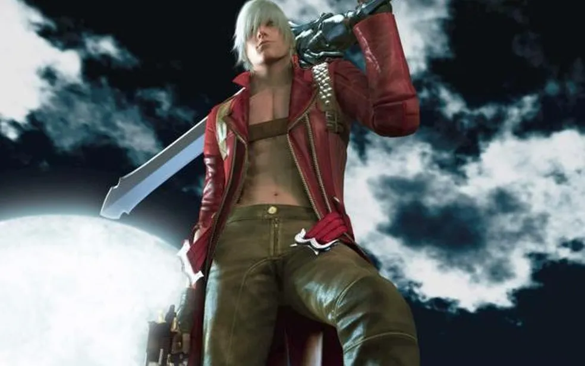
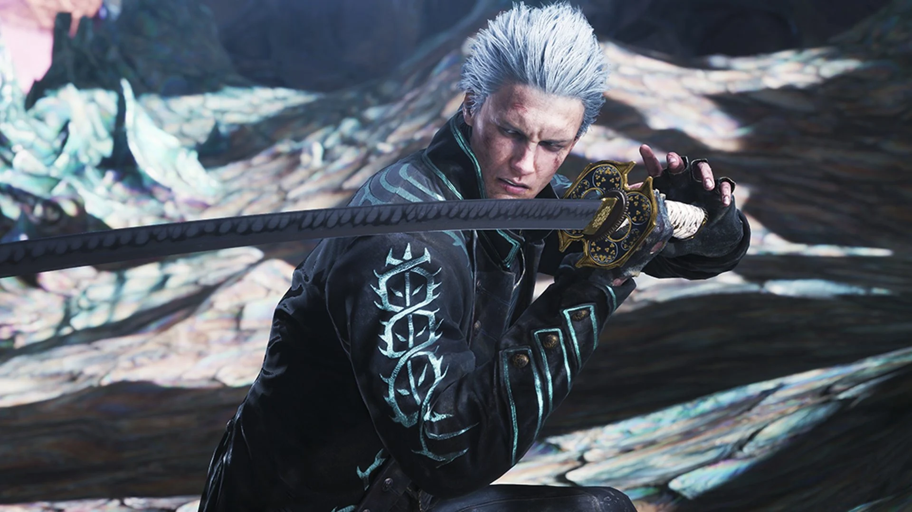
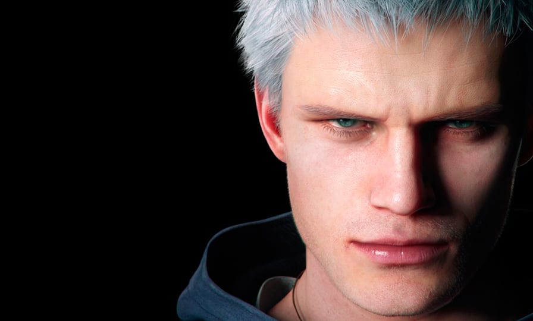

Descrição dos personagens:

Dante é o protagonista da série Devil May Cry, um caçador de demônios híbrido (meio humano, meio demônio) filho do lendário cavaleiro Sparda e da humana Eva. Após o assassinato de sua mãe e a separação de seu irmão gêmeo, Vergil, ele dedica sua vida a combater demônios, muitas vezes com atitude sarcástica, irreverente e movido pelo trauma do passado, operando sua agência de caça no mundo humano.

Vergil é o irmão gêmeo mais velho de Dante em Devil May Cry, criado após a morte da mãe deles por demônios. Diferente de Dante, ele abraça seu lado demoníaco, buscando poder absoluto com sua espada Yamato. Como vilão recorrente e rival, Vergil frequentemente luta contra Dante, tendo passado por transformações como Nelo Angelo antes de sua redenção em DMC5.

Nero é um caçador de demônios impetuoso e protagonista central em Devil May Cry 4 e 5, introduzido como um Cavaleiro Sagrado na Ordem da Espada em Fortuna. Filho de Vergil e sobrinho de Dante, Nero possui poderes demoníacos latentes, incluindo o braço "Devil Bringer", e luta para proteger a humanidade, tornando-se o guardião da Terra